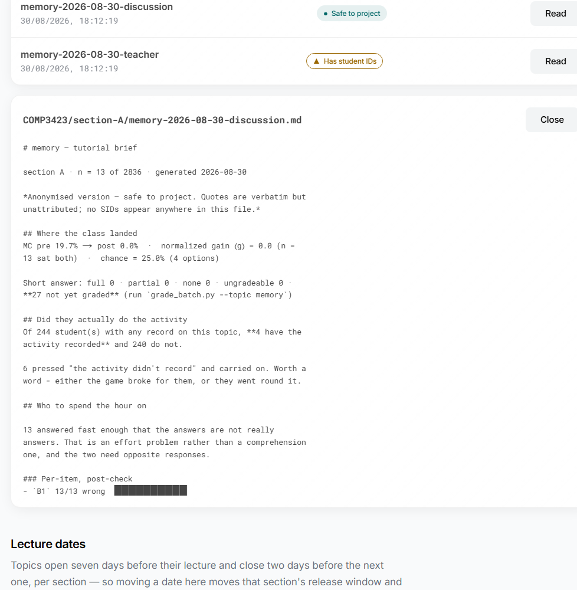

Running the experiment: exporting the data, blind-grading the short answers, generating tutorial briefs, and reading the arms — the study-owner operations that live at the command line, deliberately outside the web panel.
The teacher panel (/admin) is for running the class. It deliberately cannot see answers, scores or study conditions. Everything in this runbook — the pseudonymised export, the blind grading pass, arm balance, the questionnaire battery — is the study owner's job, and it runs at the command line on the server, on purpose. Keeping it off the web keeps the analysis blind and the raw identifiers on the box.
.participant_secretEvery export replaces the student ID with a pseudonym: HMAC-SHA256(secret, SID), first 16 hex. That secret is the only thing that joins a participant's pre-test row to their post-test row across separate exports. It is loaded from, in order: env PARTICIPANT_HMAC_SECRET, then the file backend/.participant_secret, else it is generated and persisted (with a "back this up" warning).
backend/.participant_secret off the machine before first real run, and verify the fingerprint after copying it onto the deployment box (see the deploy guide). It must stay identical for the entire study.
The arm is assigned, not stored: schedule.arm_for(sid, topic_index) is deterministic from the SID hash parity and the topic's order, so it is recomputable forever — it survives a reload, a new device, a restart. Whether the student actually played the game before the post-check is a separate, observed fact, read from the event timestamps.
| Quantity | Source | Meaning |
|---|---|---|
arm | assigned | arm_for(sid, topic_index) → FLIP / CONTROL |
played_first | observed | activity timestamp < post-check timestamp (server_ts) |
complied | derived | does observed match assigned? (or None) |
Inspect the assignment and the release windows without touching any data:
# release windows + a sample of arm assignments for 3 SIDs python backend\schedule.py --preview # fail-closed calendar check (exit 1 on any problem) — run before a term python backend\schedule.py --validate
The export endpoint is pseudonymised by construction — there is no identified mode — and it excludes any withdrawn participant. It is gated by a token and fails closed: with no token set, it refuses rather than leaks.
# set the token first (this session only); unset => endpoint 503s by design $env:EXPORT_TOKEN = "<a long random string>" # pull the full pseudonymised event log as CSV curl -H "X-Export-Token: $env:EXPORT_TOKEN" "https://<host>/api/research/export?format=csv" -o events.csv # quick "is the sink alive" probe — open, no token, no identifiers curl "https://<host>/api/research/summary" → {"total_events": N, "participants": M}
Each exported row carries exactly these columns:
id, participant_id, event_type, topic_id, mode, score, played_understanding_first, duration_ms, client_ts, server_ts, meta
participant_id is the HMAC pseudonym — never the real SID.meta is JSON; it carries corpus_version / app_version stamped server-side, and questionnaire raw answers.backend/research_events.db (override with RESEARCH_DB_PATH). CSV downloads as research_events.csv.Short answers are graded by the model with the identity and the labels physically removed first: grade.blind() strips the SID, pseudonym, form, phase, score, arm and timestamps, re-tags each answer with SHA256(seed:id), and sorts by that tag — which also destroys the pre/post positional order. The grader cannot know whose answer it is, or whether it is a pre or a post.
usage: grade_batch.py [--topic TOPIC] [--seed SEED] [--dry-run]
[--resume] [--sample-for-human N] [--kappa HUMAN_CSV] [--out OUT]
# see what would be graded, no model called python backend\grade_batch.py --dry-run # grade one topic (~15 s/answer on the dev GPU) python backend\grade_batch.py --topic webers-law # resume after an interruption python backend\grade_batch.py --resume
GRADE_NUM_PREDICT (pinned 1536)
Measured on this model: a cap of 320/512/640/768 returns an empty string, which is indistinguishable from "not enough signal to grade" — so too low a cap silently turns every answer into a missing datum while the batch looks like it ran fine. 1024+ returns correct JSON; the code pins 1536.
Hand-code a sample against the machine, blind to its grades, then compare:
# a blank coding sheet — 60 answers, NO machine grades in it (anti-anchoring) python backend\grade_batch.py --sample-for-human 60 # after a human fills it in: pair by tag, print n / agreement / kappa python backend\grade_batch.py --kappa human-coding-sheet-60.csv
Grades are written to reports/grades/ (override GRADES_DIR). A κ below 0.6 prints a warning that the machine grades are "descriptive colour only" — report them as such.
The report generator computes every number in Python (pass 1) and only uses the LLM to cluster free text (pass 2, skip with --no-llm). It writes three files, always, to reports/{cohort}/section-{X}/{topic}-{date}-{suffix}.md:
| Suffix | Contains | Handling |
|---|---|---|
-discussion | anonymised, no SIDs | Safe to project. The script greps it for leaked SIDs and warns. |
-teacher | SIDs, no arms | Your eyes only. Never leaves the machine. |
-research | SIDs and FLIP/CONTROL arm + sequence | Analysis only. Never served by the panel, by construction. |
python backend\generate_tutorial_report.py --topic webers-law --section B python backend\generate_tutorial_report.py --topic webers-law --section B --no-llm
The -teacher and -discussion copies are the ones surfaced in the course-team panel (see the teacher manual). The -research copy is the only one that names arms, and it is written to disk for you but is structurally unreachable through the browser.

-discussion copy). The numbers here are counted in code; only the plain-language read is written by the LLM.The four instruments are wired but OFF by default. Both routes return 404 until enabled, so the UI never draws a form that cannot be submitted.
# turn the battery ON — only after the HSESC amendment is approved $env:QUESTIONNAIRES_ENABLED = "1" # default "0" => 404 not_available
no_consent before consent, same as every recorded path.idx_events_once_v2) is the real backstop against races; a second attempt gets 409.reverse and subscales fields. Raw answers only are stored (in meta.answers); scoring is done at analysis time from the study-pack codebook.TELEMETRY_ENABLED — do not enable ahead of approval.measures.py turns the raw sink into analysis-ready rows without a server or the model — it reads the DB directly.
# per-(participant, topic) table + a coverage summary python backend\measures.py # filter to one participant python backend\measures.py --participant 22074221D
Each row gives arm, played_first (with a played_first_basis so you know why it is None), complied, the three scores (pre / post / assessment), the step timestamps, and the skip/escape flags. coverage() gives the headline: pairs, determinable, complied, no-activity, no-post-test, took-escape. Hake's ⟨g⟩ itself is computed in the report generator, over students who sat both checks.
Withdrawal from the app already tombstones the account and ends every session. To also purge their rows from the research sink:
# dry run — reports the count, changes nothing python backend\research_store.py --forget 24E00123A # actually erase (irreversible) python backend\research_store.py --forget 24E00123A --yes
This purges the sink only; the account tombstone in auth_store is separate and left intact.
EXPORT_TOKEN is unset — that is the fail-closed default, not a bug. Set it.GRADE_NUM_PREDICT was lowered below 1536 — the model returns empty and it reads as "no data". Restore 1536..participant_secret changed between runs. There is no recovery — protect the file.-teacher or -research copy left the machine. Only -discussion is safe to share; the other two carry identifiers (and the research copy, arms).QUESTIONNAIRES_ENABLED is off — correct until the amendment lands.docs/runbook.md and the installation guide. This document covers only the research operations layered on top.